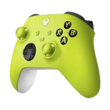

O Xbox é mais do que um simples console de videogame; é uma verdadeira máquina de entretenimento que redefine os padrões de desempenho e imersão. Equipado com a mais avançada tecnologia de processamento gráfico e computação, o Xbox oferece uma experiência de jogo incomparável, com gráficos de alta definição e tempos de carregamento extremamente rápidos. A potência do console permite que os jogos ganhem vida com detalhes impressionantes e uma jogabilidade suave, seja em mundos abertos expansivos ou em batalhas intensas. Além disso, o Xbox é projetado para se manter à frente das tendências, oferecendo atualizações e suporte contínuo para garantir que você sempre tenha acesso às mais recentes inovações tecnológicas. Prepare-se para explorar, competir e criar em uma plataforma que transforma cada sessão de jogo em uma experiência memorável.
O controle do Xbox é a extensão perfeita das suas mãos, projetado para oferecer um conforto ergonômico e uma precisão incomparável. Com um design aprimorado que se adapta naturalmente às suas mãos, o controle garante que você possa jogar por horas com total conforto e controle. Os gatilhos e botões são responsivos e intuitivos, proporcionando uma experiência de jogo fluida e envolvente. A tecnologia de feedback tátil e a resposta dos gatilhos garantem uma conexão profunda com o jogo, tornando cada ação mais realista e imersiva. Além disso, o controle é compatível com uma variedade de acessórios e opções de personalização, permitindo que você ajuste o dispositivo para se adequar perfeitamente ao seu estilo de jogo. Sinta a diferença com um controle que não é apenas uma ferramenta, mas uma parte essencial da sua experiência de jogo.
O Xbox Game Pass é a chave para um universo de jogos, oferecendo uma vasta biblioteca de títulos de alta qualidade por uma taxa mensal acessível. Com acesso a centenas de jogos, incluindo lançamentos recentes e clássicos atemporais, o Game Pass permite que você explore novos mundos e descubra novos favoritos sem limitações. Seja você fã de aventuras épicas, batalhas intensas ou experiências inovadoras, o Game Pass tem algo para todos. Além disso, a inclusão de títulos exclusivos e a adição constante de novos jogos garantem que você sempre tenha algo novo para jogar. A flexibilidade do Game Pass também permite jogar em diferentes dispositivos, incluindo consoles, PCs e dispositivos móveis, proporcionando uma experiência de jogo contínua e conveniente onde quer que você esteja. Transforme sua forma de jogar e aproveite o melhor do mundo dos videogames com o Xbox Game Pass.